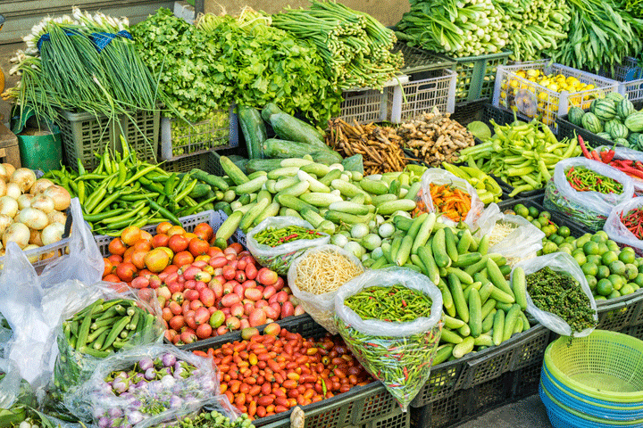
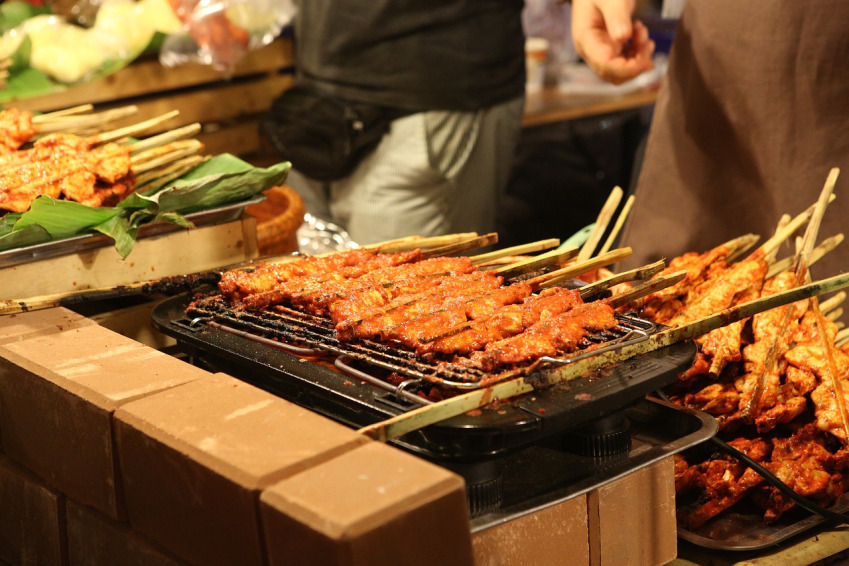

Vijftien jaar geleden kon ik voor het eerst en zeker niet voor het laatst genieten van de Thaise keuken.
In de straten van Thailand is het onmogelijk te weerstaan aan de geur van streetfood, men begint al heel vroeg in de ochtend en ze gaan verder tot laat in de nacht, Thailand never sleeps. Zelfs op de rivieren zal je geen honger lijden want talrijke bootjes bieden verse warme maaltijden aan maar ook de overheerlijke Thaise pannekoek of sticky rice met verse mango vind je er overal met niet te vergeten vers fruit en ijsjes in overvloed.


Iedereen die er ooit heeft van genoten zal zich terug in Thailand wanen. Wij brengen die ervaring naar Dendermonde met dagverse producten en authentieke kruiden.
Onze passie is: voor hen die er geweest zijn zich opnieuw in Thailand te wanen en voor zij die ervan dromen, dankzij ons "à la carte aanbod" een idee te geven van wat ze mogen verwachten als ze die droom verwezenlijken.
Uiteraard is het niveau "pikant" aangepast aan onze normen. Gezien we dagelijks alles vers bereiden, is dit meestal op eenvoudig verzoek aan te passen aan Uw smaak.
Vergeet vooral niet te vermelden indien U allergisch zou zijn aan bepaalde ingrediënten of indien U sommige ingrediënten liever niet hebt, en geniet vooral van de verscheidenheid aan smaken van zuur tot zoet, al dan niet gecombineerd met pikant.